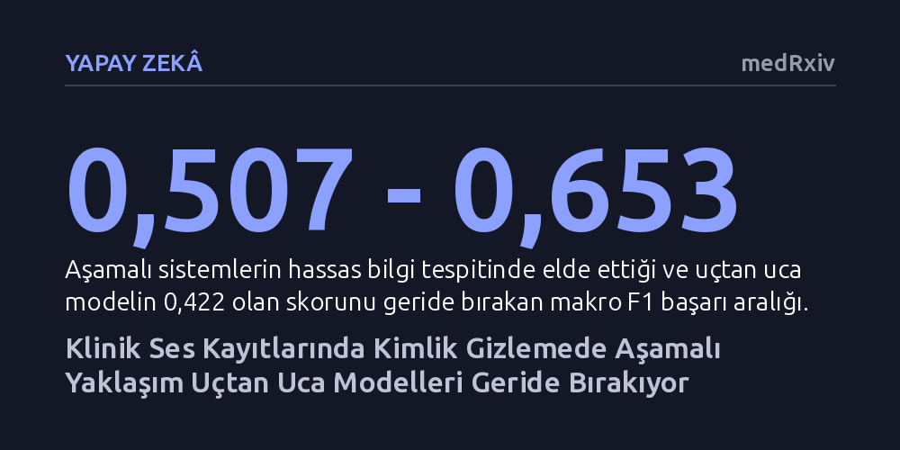

YAPAY-ZEKA · medRxiv · 2026-10-19
Klinik ses kayıtlarındaki hassas hasta bilgilerinin doğrudan sesten nasıl gizlenebileceği araştırıldı. Sesi önce metne döküp temizleyen aşamalı sistemlerin uçtan uca modellerden daha iyi çalıştığı, kategoriye duyarlı model yönlendirmesinin ise başarıyı artırdığı belirlendi.
Klinik ses kayıtlarının güvenle paylaşılabilmesi için doğrudan ses seviyesinde gizlilik sağlanması gerektiğini ve mevcut durumda çok adımlı sistemlerin tekil modellerden daha güvenilir olduğunu gösteriyor.

Sağlık kuruluşlarında doktor ve hasta görüşmelerinin ses kaydına alınması, klinik notların hızla oluşturulması ve dokümantasyon yükünün hafifletilmesi açısından büyük kolaylık sağlar. Ancak bu kayıtlar hastanın adı, adresi, doğum tarihi ve tıbbi geçmişi gibi son derece hassas sağlık bilgilerini barındırır. Bugüne kadar geliştirilen güvenlik yaklaşımları genellikle sesi önce yazıya döküp ardından bu metindeki kişisel verileri maskelemeye odaklanıyordu.
Fakat asıl ses dosyası silinmediği veya doğrudan temizlenmediği sürece, hastanın kimliği ses tonundan ve kayıttaki ifadelerden doğrudan deşifre edilebilme riski taşır. Ses kayıtlarının araştırma, eğitim veya yapay zeka modellerini eğitme amacıyla güvenle paylaşılabilmesi için doğrudan ses kaydı seviyesinde bir kimliksizleştirme standardına ihtiyaç duyulmaktadır.
Araştırmacılar, bu alandaki eksikliği gidermek amacıyla SREDH-AICUP 2025 adı verilen standart bir kıyaslama platformu kurdu. Değerlendirmeye, konuşmayı önce metne döken ve ardından metin üzerinde hassas bilgileri tespit eden 22 farklı aşamalı yapay zeka sistemi dahil edildi. Araştırma ekibi ayrıca, sesi ara bir metne dönüştürmeden doğrudan işleyen 'uçtan uca' temel yapay zeka modellerini de aynı test ortamında kıyasladı.
Modellerin konuşmaları metne dönüştürme doğruluğu transkripsiyon hata oranıyla, hassas sağlık bilgilerini yakalama başarısı ise makro F1 skoruyla ölçüldü. Bunun yanı sıra, yetersiz eğitim verisine sahip diller için sentetik veri üretiminin katkısı ve farklı modellerin güçlü oldukları bilgi türlerine göre dinamik olarak yönlendirilmesi gibi yöntemler incelendi.
Elde edilen sonuçlar, geleneksel aşamalı boru hatlarının doğrudan sesle çalışan uçtan uca modellerden belirgin şekilde daha yüksek performans gösterdiğini ortaya koydu. Konuşmayı metne dönüştürme aşamasında aşamalı sistemler 0,123 hata oranına ulaşırken, uçtan uca model 0,155 seviyesinde kaldı. Hassas bilgileri tespit etmede de aşamalı sistemler 0,507 ile 0,653 arasında makro F1 skorları yakalarken, uçtan uca temel model 0,422 puanda kaldı.
Çalışmanın bir diğer önemli bulgusu ise veri artırma tekniklerinin etkisini gösterdi. Uçtan uca model, Mandarin dilindeki hassas sağlık bilgilerini başlangıçta hiç tanıyamazken (0 F1 skoru), sentetik konuşma ve metin üretimiyle eğitildikten sonra bu skoru 0,171'e çıkardı. Ayrıca, farklı temel modellerin belirli bilgi türlerinde farklı başarılar sergilediği saptandı; modelleri bilgi türüne göre uyarlamalı olarak yönlendiren yaklaşım, genel F1 skorunu 0,656'dan 0,697'ye yükseltti.
Bu bulgular, klinik ses kayıtlarında hasta mahremiyetini korumanın henüz tek bir yapay zeka modeliyle tam olarak çözülemediğini gösteriyor. Sesi önce yazıya çevirip ardından kişisel verileri filtreleyen aşamalı yöntemler, günümüzde uçtan uca derin öğrenme mimarilerine kıyasla daha güvenilir sonuçlar vermeyi sürdürüyor. Bununla birlikte, tek bir model yerine farklı bilgi türlerinde uzmanlaşmış modellerin koordineli çalıştırılması en yüksek başarıyı sağlıyor.
Klinik ses kayıtlarının güvenle paylaşılabilmesi için bu sistemlerin gerçek hastane ortamlarında, farklı aksanlar ve arka plan gürültüleri altında daha geniş veri setleriyle doğrulanması gerekiyor. Sentetik verilerin sağladığı ilerleme umut verici olsa da, tespit edilemeyen küçük hataların bile hasta mahremiyetini doğrudan riske atabileceği göz önünde bulundurulmalıdır.